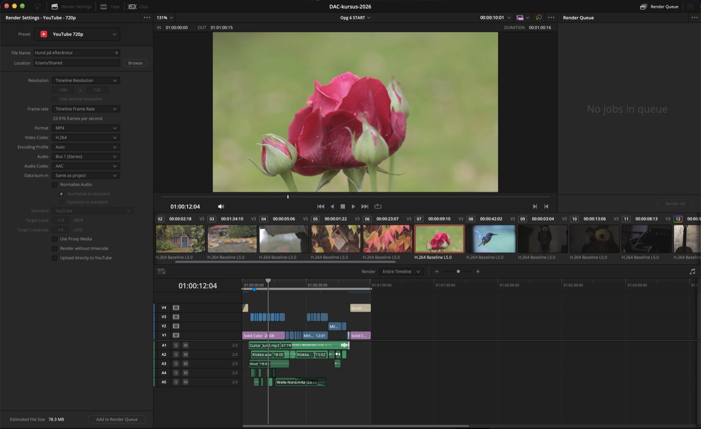
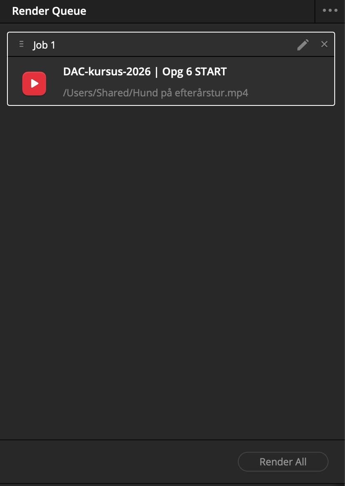
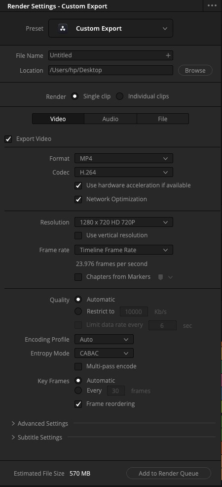

5 + 12 min
 Fra timeline til fil
Fra timeline til fil
-
Gå til Deliver
Klik på Deliver i sidelinjen nederst. Timelinen, du har åben, følger med.

Render Settings til venstre, Render Queue til højre. -
Vælg et preset
Øverst i Render Settings vælger du et preset: YouTube 720p. Det sætter format og codec til noget, der virker de fleste steder, og opløsningen til den samme som projektet, 1280 x 720.
-
Navngiv filen, og vælg hvor den skal ligge
Skriv et navn under File Name. Under Location vælger du skrivebordet, så du kan finde filen igen.
-
Tilføj til køen, og render
Klik Add to Render Queue nederst. Jobbet lægger sig i Render Queue til højre. Klik Render All for at starte.

Gør selv · 12 min
Eksportér introen til skrivebordet, og afspil filen.
Checkpoint
Filen ligger på skrivebordet og kan afspilles. Næste opgave starter i Opg 7 START.
Render All er grå og kan ikke klikkes
Der ligger ikke noget job i Render Queue endnu. Klik Add to Render Queue først.
Til undervisningen
Bestem på forhånd, hvor eleverne gemmer, og hvad filen skal hedde, fx klasse og navn. Ellers bruger I afleveringstimen på at lede efter filer.
Hurtigt færdig?
Prøv Custom Export i stedet for et preset. Her kan du styre format, codec, opløsning og kvalitet selv. Eksportér en version med en anden kvalitet, og sammenlign filstørrelsen med den første.
